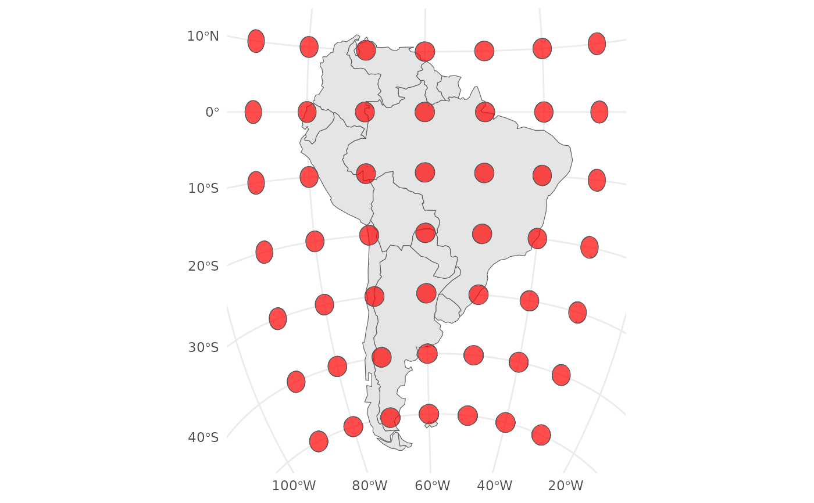

geom_tissot.RdThis function adds Tissot's indicatrix to a map. Tissot's indicatrix is a mathematical contrivance used in cartography to characterize local distortions due to map projection.
Set of aesthetic mappings created by ggplot2::aes(). If
specified and inherit.aes = TRUE (the default), it is combined with the
default mapping at the top level of the plot. You must supply mapping if
there is no plot mapping.
The data to be displayed in this layer. There are two options: A sf object or a SpatRaster object
If FALSE, the default, missing values are removed with a warning. If TRUE, missing values are silently removed.
logical. Should this layer be included in the legends? NA, the default, includes if any aesthetics are mapped. FALSE never includes, and TRUE always includes. It can also be a named logical vector to finely select the aesthetics to display.
If FALSE, overrides the default aesthetics, rather than
combining with them. This is most useful for helper functions that define
both data and aesthetics and shouldn't inherit behaviour from the default
plot specification, e.g. ggplot2::geom_point().
Either a list with elements "lng" and "lat" giving the
longitudes and latitudes of the grid of centres for the Tissot's
indicatrix, or a vector of length 2 with the number of rows and columns to
generate such a grid automatically. The latter is passed to pretty() to
get pretty breaks, and the exact number of Tissot's circles might differ
from the input numbers (see pretty() for details. It defaults to c(5,5).
The radius of the circles (see sf::st_buffer() for an
explanation of how units are created; we recommend that you explicitly
state your using with the units::as_units(), e.g units::as_units(100, "km")
The fill colour of the circles
The transparency of the circles
Other arguments passed on to ggplot2::geom_sf()
A ggplot2 object
# load required packages
library(rnaturalearth)
library(sf)
#> Linking to GEOS 3.12.1, GDAL 3.8.4, PROJ 9.4.0; sf_use_s2() is TRUE
library(ggplot2)
s_america_sf <- ne_countries(continent = "South America", returnclass = "sf")
s_am_equal_area <- suggest_crs(s_america_sf, distortion = "equal_area")
#> To reduce overall distortion on the map, one can also compress the map in the north-south direction (with a factor s) and expand the map in the east-west direction (with a factor 1 / s). The factor s can be determined with a trial-and-error approach comparing the distortion patterns along the centre and at the border of the map.
ggplot(data = s_america_sf) +
geom_sf() +
geom_tissot() +
coord_sf(crs = s_am_equal_area$proj4) +
theme_minimal()
